Using Github and Github Codespaces
Contents
Using Github and Github Codespaces#
We are going to be using Github Classroom and Github Codespaces to do our work. We will go through how to get set-up in class. This means signing-up for a Github account, accessing assignments (i.e. forking repositories) via Github Classroom, working on these assignments in Github Codespaces, and then, finally, submitting your assignments back to Github Classroom using git commands.
Github Codespaces will allow us to use the VS Code developer environment in a browser, without doing a local install. We’ll need to understand how it works.
Setting up Github#
Sign-up for a Github account: https://github.com/signup. Use your Elon email address. Pick a username that you’ll want others to see! I suggest using your name in some form. If you plan on applying for data jobs, you’ll want to share your Github page.
You then want to join Github Education for Students. This will get you access to tools like the AI code assistant Copilot inside of Codespaces.
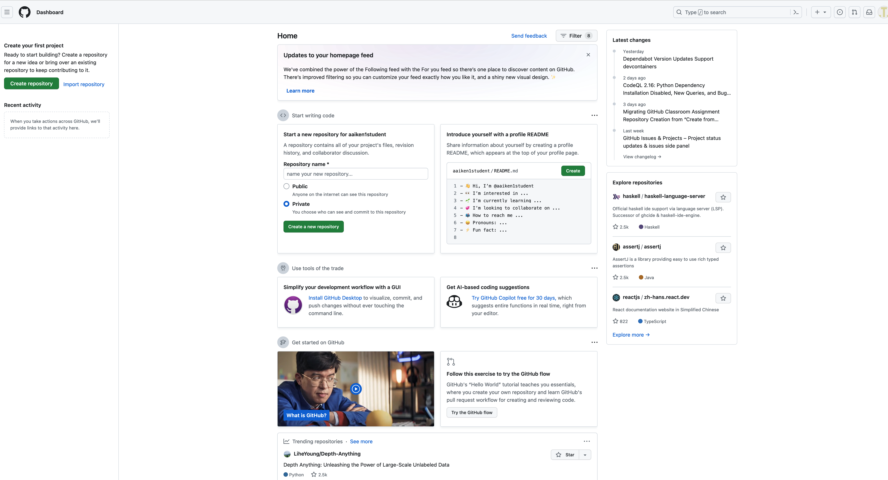
Fig. 3 Github.com when you are logged-in.#
After signing-up for Github, you will get a Github page, like mine: https://github.com/aaiken1.
Or, my fake student page I use to test our workflow: https://github.com/aaiken1student/.
Let’s start by creating a repository for your main page. Repos are like folders. Each lab, exam, and project for this course will have it’s own repo. You can create your own as well.
Go to the upper-left of your main Github.com page and click on the green button. That icon is the repo icon.
This will take you to the create a repo page. Give your new repo the same name as your user name. This will create a special repo, as Github tells you. This is where you can create a readme file that tells folks who visit your page who you are. Make sure that option is checked near the bottom of the page before you create the repo.
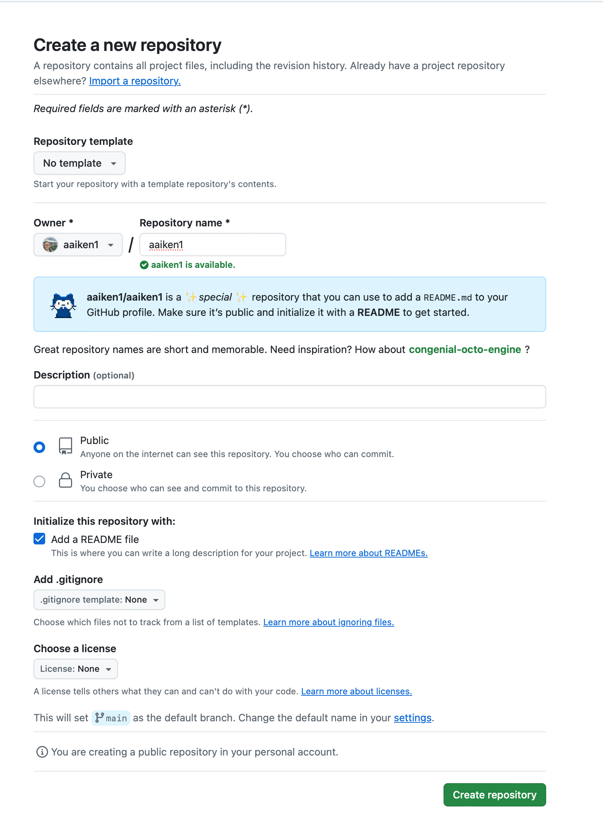
Fig. 4 This is the screen that you’ll see when creating a repo for your readme file.#
Go back to your main page. Do you see the pencil in the upper-right hand corner of your readme box? Click that to edit the readme file directly in the browser. You could also do this via a Codespace or locally, once you see more about how files and repos work on Github.
You are editing the readme.md file using a language called markdown. Hence, the .md file extensions. I have a separate section in my notes on this. Markdown is how you’ll create text to go along with your code in this class. You can both edit and preview your readme file in the browser.
You can read more about readme files and creating them here: https://docs.github.com/en/account-and-profile/setting-up-and-managing-your-github-profile/customizing-your-profile/managing-your-profile-readme
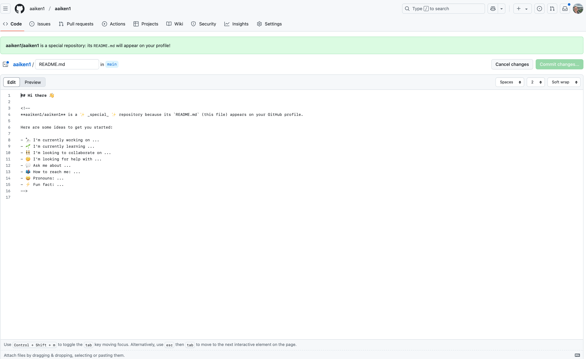
Fig. 5 You can edit your readme.md file directly in your browser.#
Accepting assignments in Github Classroom#
Now that you have a Github account and page, let’s start our workflow by accepting an assignment. Go to Moodle and find the link for Lab00. You might need to copy and paste it into your browser.
This is the lab to help us get started. You’ll be asked to find your name from the class roster and then link your Github account to our Github Classroom. Our Github Classroom is how you will access and submit assignments and is called elon-fin-data.
When you accept an assignment, you’ll fork (copy) the repository (folder) with that assignment. You’ll then work in this new repository, which will be linked to your Github account. For example, you’ll see a new repository named something like lab00-getting-started-git-aaiken1student, where your Github username will replace my name.
These are ideas from git, which is used for version control. More on that in a second.
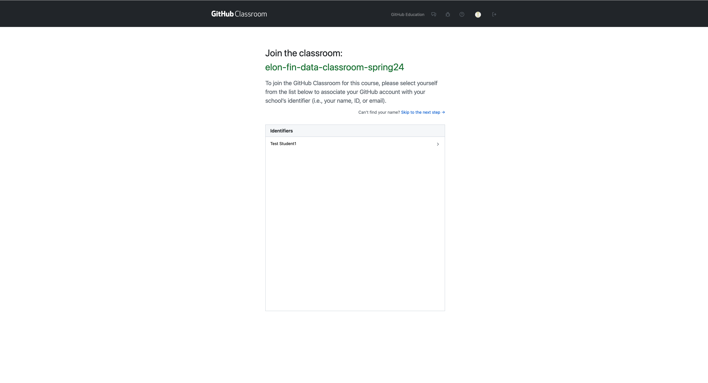
Fig. 6 You’ll see a list of everyone in the class when you first access an assignment. You’ll need to link your Github account to the username in Github Classroom.#
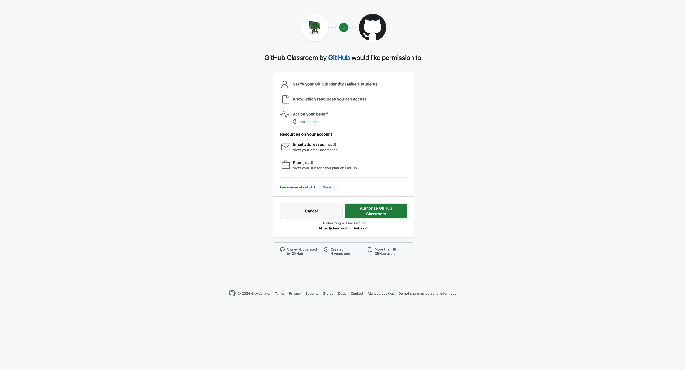
Fig. 7 Link my Github Classroom to your Github account.#
This repository will have the assignment file and anything else that you might need. Note that you may have to refresh your browser in order to finally accept the assignment.
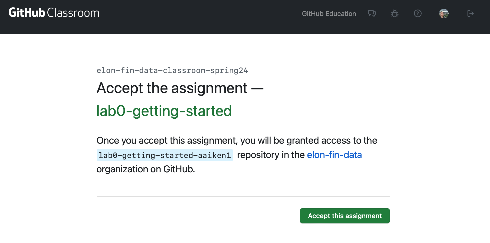
Fig. 8 You’ll accept the assignment to fork the repository.#
Since this repository is part of Github Classroom, I’ll be able to see your code as you work. No need to email files back and forth like an animal!
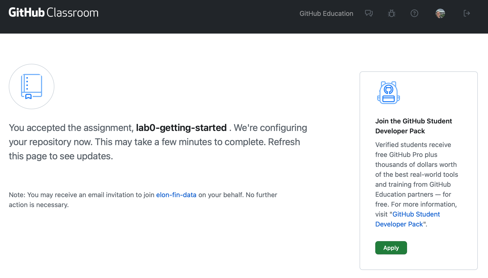
Fig. 9 You’ll need to refresh your browser to complete the process.#
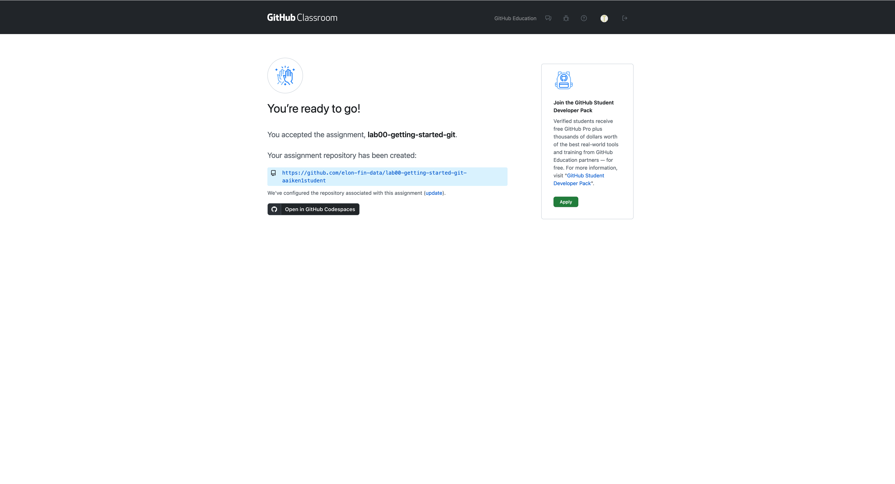
Fig. 10 Ready to go after a browser refresh. You see the URL for the new repository that you’ve created using the assignment.#
Repositories are Like Folders#
Now that you’ve accepted the assignment, it is time to get to work! Browse to your assignment repository (repo).
I have created a Youtube video that shows you some of the basics of how a repo works: https://www.youtube.com/watch?v=MOevORafn-g.
This assignment repo is your own, personal copy of the assignment. All of your work for that particular assignment is going to be stored in that folder on Github. But, I might go and update the assignment! What happens to your copy? You can synch fork to make sure that you have latest assignment. There will be a message at the top of the repo if you are out of synch.
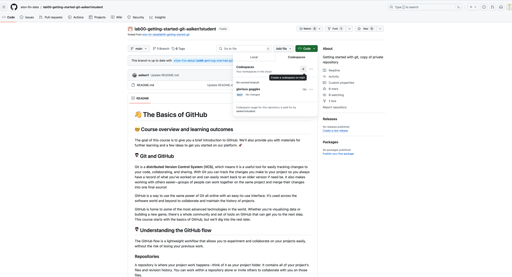
Fig. 11 You can open up a Github Codespace from the assignment repo.#
Github Codespaces#
Now, you can open up a Github Codespace. Codespace is essentially VS Code, but in the cloud, running on Github (i.e. Microsoft) servers. You get a certain number of hours of runtime for free each month. It should be more than enough for the work that we’re doing in this class.
I have also created a video that shows you a bit about using Codespaces: https://www.youtube.com/watch?v=VUHuEXTne6Q
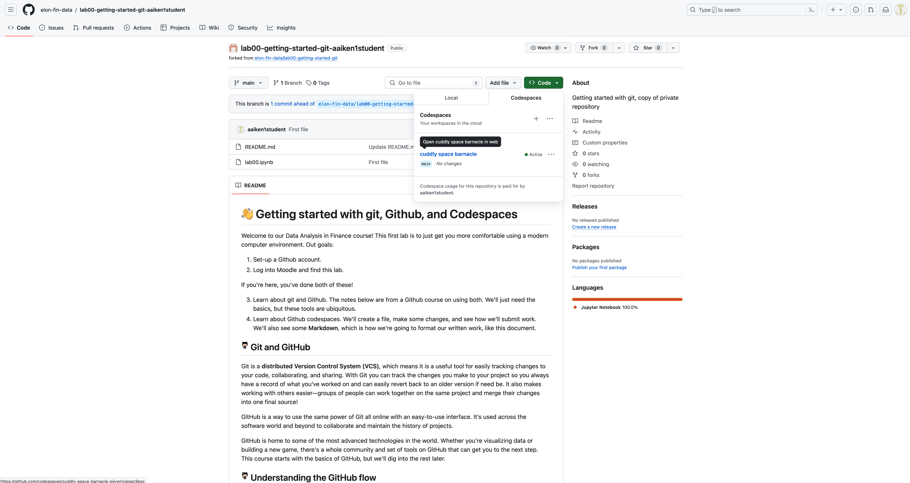
Fig. 12 After you’ve done some work and followed the git steps to synch (or push) your files, you’ll see them appear in your repository.#
I’ll be able to see you committing and pushing files to your repositories, since the assignment repositories live in the elon-fin-data Git Classroom.
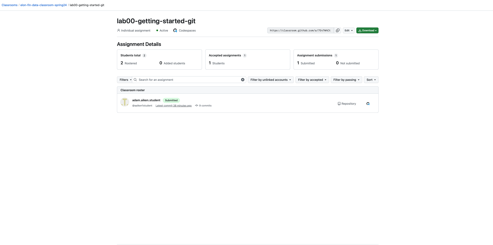
Fig. 13 This is what I see on my end for each student and each assignment. I can see your number of commits and your latest work.#
You can create new Codespaces, as well as see all of you recent ones by going to the main Codespace page: https://github.com/codespaces/.
We are going to use our Codespace as VS Code in the cloud. VS Code is a place to… code. But, what kind of code? VS Code can be used for just about any programming language. We’ll be using two types of files: regular Python scripts (.py) and Jupyter notebooks (.ipynb). The latter lets us mix Python and Markdown to create integrated reports.
Notice that Codespaces can be associated with repositories. You can also just create new ones and start working on something. Github provides some ready-made templates, like the Jupyter Notebook one.
Each Codespace that you create is an example of an environment. A Codespace is like a virtual machine that comes preloaded with tools and dependencies for development. You can upload files to it. You can download from it. You can install things. It’s like having a mini-computer running in the cloud. You can have multiple codepsaces at a time, though there are memory and data limits. Keep these in mind - if you aren’t careful about you’re codespaces, you’ll get asked to delete some by Github, possibly losing unsaved work.
For Python, this includes interpreters, package managers like pip, and the ability to install libraries and frameworks. We’ll get to that.
Codespace instances will keep running, even if you close your browser. You can log out and then log into them from another computer. Think of them like a Google Doc.
But, like a Google Doc, the files in the Codespace are not on your computer. I’ll discuss this more below when covering git commands and submitting your work. It’s crucial to understand where your files live!
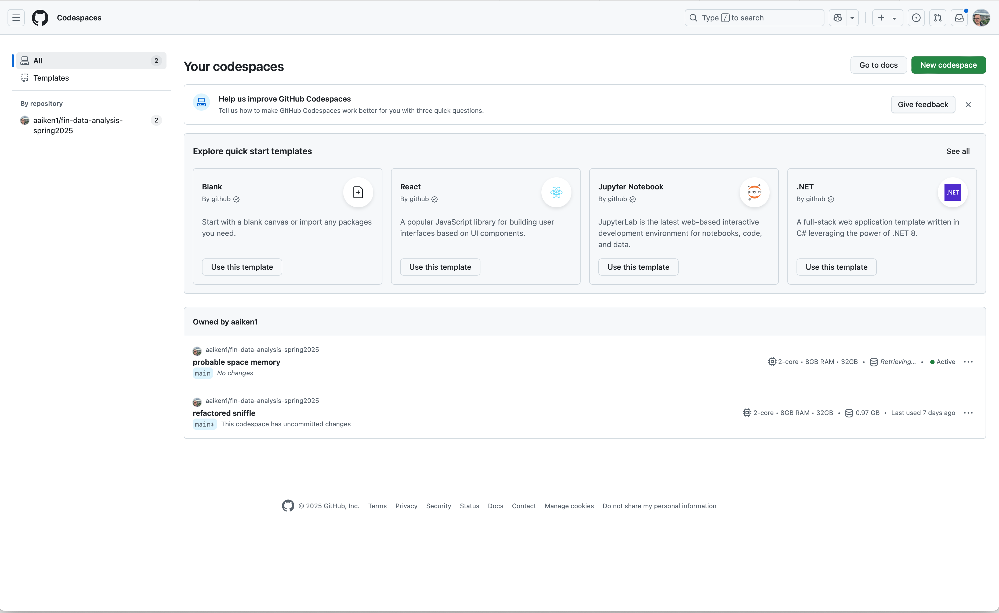
Fig. 14 The main page for Github Codespaces. You can create a new codespace, as well as see recent ones that you’ve worked in.#
You can see a few important things on the page above. First, note my repos in the top-left. These are my “folders”, my repositories, that have active codespaces.
You can click the green button on the right to create a new codespace. You’ll associate each codespace with a repo once you click. You’ll have a different repo for every lab, as well as one for the class overall.
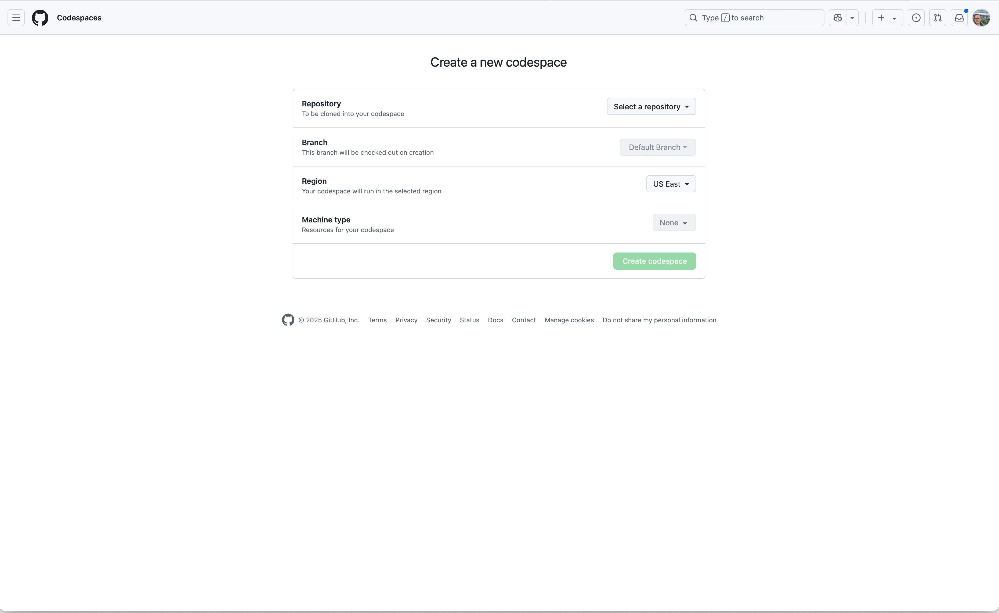
Fig. 15 Every codespace is associated with a repo.#
At the bottom, you’ll see all of the codespaces that I currently have running. You’ll have a codespace for every lab, just like you have a repo for every lab.
Working inside a Codespace in VS Code#
Once you’ve created a codespace, you have a place to work. You are now using VS Code in the cloud.
Let’s start with the Explorer. This is where you’ll see your current files and folders. The top button on the left vertical menu bar gets you there, as does Command-Shift-E. I usually start by opening a folder under File. This gets what I want in the Explorer window. If you are working on a lab, you should see my readme.md file with the instructions for the lab.
You can create a new Jupyter Notebook in VS Code by hitting Command-Shift-P. This brings up the command palette. Search for Jupyter. You can also find it under View::Command Palette
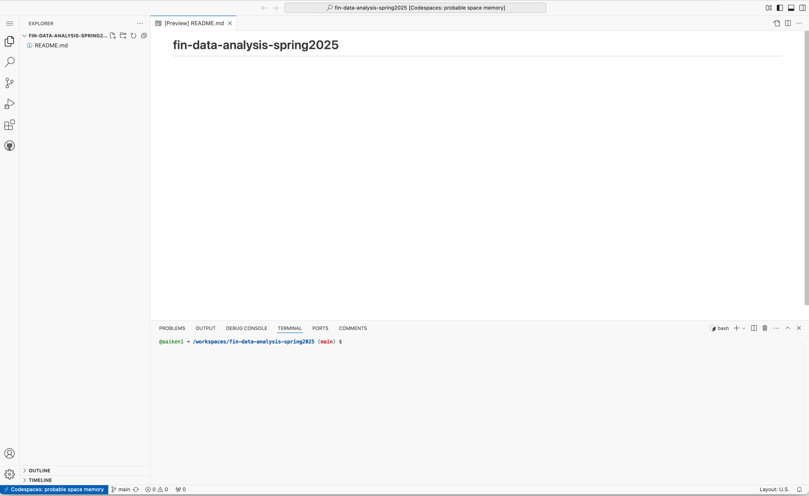
Fig. 16 Every codespace is associated with a repo.#
Back to our assignment repository. To get going, you’ll need to tell Codespace that you want to work in Python. This means navigating to Extensions on the left. You’ll search for and install Python and Jupyter. You’ll need to do this every time you create a new codespace. Remember, each assignment is going to have a unique codespace associated with a particular repository that I’ve created.
Once you have these extensions, you can actually create a notebook file. Go up to the command palette, that strip at the top of your window where you can type commands. Type > Jupyter. You should get an option to create a new Jupyter notebook. This will open up a blank notebook, where you can write Python code and Markdown, mixing code and text.
You can also go to the Explorer tab on the left, click the new file icon, and create a new file with an .ipynb extension. This file will start its life in the folder that you created it in.
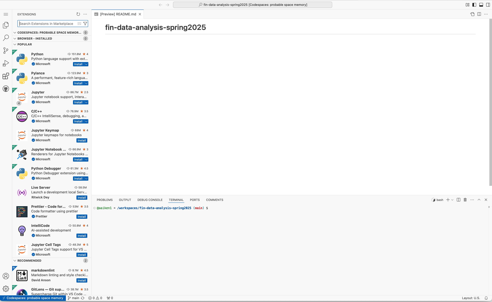
Fig. 17 Codespace comes with hundreds of possible extensions. You’ll need to install Python and Jupyter to tell each Codespace about these tools and gain access to them.#
When you create a notebook file, you might see Select Kernel over in the upper-right hand corner. The kernel is what actually runs your code. There are many different versions of Python out there. The version that we are using is on Github’s server. The version that I’m seeing in Codespaces is Python 3.12.1. Without a kernel selected, none of your Python code will work.
Once you have your working Jupyter notebook (.ipynb) file created, you can proceed like you would with a local install of VS Code. Load your data, do you analysis. You work will be saved in the Codespace instance associated with that repository.
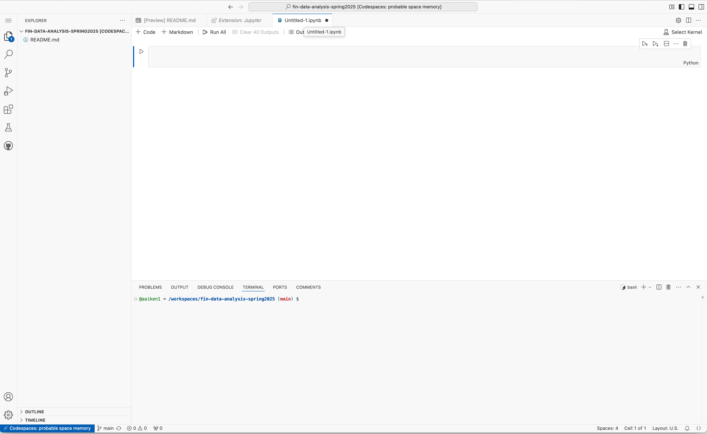
Fig. 18 We’ll do our work inside of Jupyter Notebooks.#
See how the file is called Untitled-1.ipynb? Not good - you need to save your work for it to be in your Codespace. You can hit Command or CTRL-S to save the file. Make sure that you rename it. Once you save the file, it will appear on the left in the Explorer window. This file now lives in your Codespace, but I won’t be able to see it on my end. We’ll need to use git to move our files around.
I’ll discuss the ins-and-outs of the Jupyter Notebook and git in the next sections.
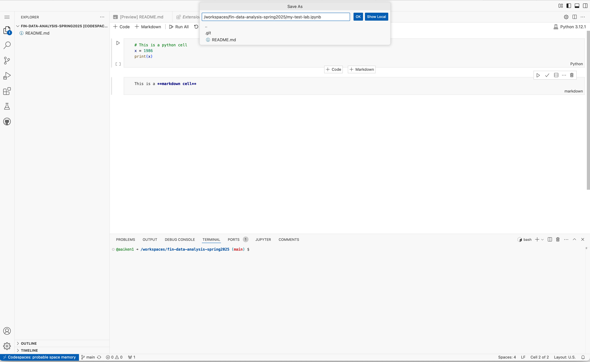
Fig. 19 I am saving my Jupyter notebook with a few cells in it.#
As you go, you can add/commit/push your files to your repository to move them from the Codespace instance to your Github repository for that assignment. This will make them more “permanent”. As you do more work, you add/commit/push again to update. I’ll discuss handling files more below.
I found this video to be helpful in explaining how to navigate Codespaces: https://www.youtube.com/watch?v=kvJf8s18Vr4. Don’t worry about all of the coding, yet. We just want to get a sense of how this environment works.
Visual studio has many helpful tutorials, like this one on using VS Code with Python. There’a also a tutorial for using VS Code and Jupyter Notebooks. Definitely look at this one.
Jupyter notebooks inside of a Codespace#
We are going to use Jupyter notebooks in Github Codespaces. There’s a lot of ways to use Jupyter notebooks, since they are used every where in data analysis. You can also create Jupyter notebooks using Google Colab, another browser-based developer environment. You can also use them locally.
What are Jupyter notebooks? They are a way to combine Python and Markdown. Each cell in a Jupyter notebook contains come kind of code. That code might be Python. When you run the cell, that code is executed and you’ll see the result below. You can all have Markdown code in a cell. Markdown let’s you include text along with your Python code. This means that you end up producing a notebook that has your code, your output, and your own write-up. This type of notebook environment is very popular for exploring data and the reporting on what you found.
You can read about using VS Code and Jupyter notebooks here. I go into more detail on using notebooks with VS Code later. Things will basically work the same in Github Codespaces.
And here’s the link to the Datacamp Cheatsheet for Jupyter notebooks again.
In a Jupyter notebook, we write our code in cells. Click the + Code button at the top to add a code cell. Make sure it is Python - you’ll see that in the lower right of this cell. Click the + Markdown button to add a Markdown cell.
Your labs, exams, and projects are going to be a mix of Markdown and Python. Run some code, show a graph, write-up your results in a nicely formatted way. Python goes in Python cells and Markdown goes in Markdown cells.
Let’s look at the other buttons going across the top of your notebook.
Run All will run all of your cells, Markdown and Python.
Clear Output of All Cells deletes any output that appears below each code cell when it is run. It does not affect anything in memory, like data that you’ve imported.
Restart clears your Python kernel. This means that all of your work, like data imported, variables created, etc. will be deleted. It does not affect your code. You can always just re-run things.
Variables let’s you see any data that you’ve imported. A window will open down below. We don’t have any right now.
Outline uses your Markdown to show you an outline of your written document, like Google Docs. You can also find your outline in the bottom left of the VS Code window. You will be using the Markdown tags
#and##to create headers for your text.
You can run individual cells, all of the cells above the cell you’re in, or all of the cells below the one you’re in. Each Python cell will give you a single output below it, if there is one. You might also get some feedback from the code, like an error message!
When you run a Markdown cell, you’ll get formatted text. Double-click in the cell again to edit the Markdown code. You can also click the pencil icon in the upper right of the cell.
Using git to submit your work#
Both above and in our class videos, I mention add/commit/push. These are examples of git commands. Git is a framework for doing version control. In other words, keeping track of files and file changes. This is actually a tough problem! Most software development of any kind is being done by multiple people in different places. Someone might want to add a new feature, but you don’t want to break the entire project. How do you keep track of everything? Git lets us do that.
Github is a particular “flavor” of git and is owned by Microsoft. You can use git at the command line of your computer, typing in different commands. You can also “point and click”. In my videos, I show you some point and click methods.
There are a million git and Github tutorials around. We just need to know the basics to keep track of our files and to work together. It’s kind of like using Google Docs (kind of!), but going to the next level.
Here’s an intro video discussing what Github is: https://www.youtube.com/watch?v=pBy1zgt0XPc.
This is the best introduction that I’ve found: https://aeturrell.github.io/coding-for-economists/wrkflow-version-control.html. All of material in this book is great for this class.
This is another nice overview, also geared towards Masters-level data science/economics students: https://github.com/tyleransom/DScourseS24/blob/master/LectureNotes/03-CLI-Git/git_tutorial.pdf
This playlist has some good videos describing git and Github. They are part of their educator training series: https://www.youtube.com/watch?v=uWsXEmaM3PA&list=PLIRjfNq867be7VngMuXsjTvzBM26nBINg&index=2.
Here are two videos on using git and Github with a local VS Code install: https://www.youtube.com/watch?v=i_23KUAEtUM and https://www.youtube.com/watch?v=CvUiKWv2-C0. We are going to mainly be doing things in Github Codespaces, but many of the ideas are going to carryover.
You’ll see how they are using bash commands in the terminal on a Mac. Windows has a similar command line. If you want to create your own repositories and get to work, watch these videos. By using Github Codespaces, with a repository created from each assignment, you can use the Codespace interface to do a lot of the same things. Codespaces does have a terminal interface, though, so you can also use the bash commands.
The important thing, though, are the git ideas. Version control. Repositories. Snapshots. Git add, commit, push. Readme files. These are the backbone of modern computing!
Our workflow#
Here’s the workflow for each lab and exam. I can not see your files unless you do these steps!
Accept the assignment using the link for that lab on Moodle. This will fork the repo and create a copy of the assignment repo that you own. You’ll get a copy of the repo with my files in it.
Complete your work in the Codespace for that assignment. Each lab will have detailed instructions on what to do and resources to use.
Move files from your Codespace to the repo on Github. This means following the git add/commit/push steps. First, find Source Control on the left-hand menu in your Codespace. You’ll see a list of files. A green U means that the file is unstaged - it has been changed, but is not in the queue to be sent to your remote repo for this assignment. Click the plus sign next to the file to add or stage changes. This file is now ready to be sent into the cloud. The U will change to an A. Then, enter a message and hit the blue commit button. You have to enter a message. This is a note about what you’ve changed, done, what files you’re moving, etc. Finally, click the blue Synch Changes button. This will send the file up, as well as pull anything new down. You’ll get a message saying that this action will “push and pull commits from and to origin/main. Hit OK. You might also get a pop-up at the bottom about running fetch occasionally. You can hit Yes.
You can keep track of all of your commits at the bottom of the Source Control window.
These tools help us keep track of our files, where they live, when they were updated.
Moving files locally#
You can right-click on any file in the Explorer window to directly download it to your computer.
You can also drag files from your own computer to the Explorer window to move them into the Codespace.
Remember, though, just because a file is in your codespace doesn’t mean it is ready to live forever in a repo. You need to use our git commands to move the file.
How to update an assignment#
I will sometimes (often?) update an assignment after you have accepted it. You won’t know this, though, just working in your Codespace.
First, do a git add/commit/push on the files that you are working on. Get them into your repo for the assignment.
Next, go to your Github page for a lab - the repo that has your name at the end. You’ll see a message at the top that you are “Y commits ahead, X commits behind” if I’ve updated the Readme.md file with the lab instructions.
Click on behind to see the changes to the assignment, side-by-side with original assignment.
You’ll want the Readme instructions in your forked copy of my main repo to reflect what is now in the main repo. You want to Synch Fork. Click that button at the top, under the “X commits behind” message.
Click the green Update Branch button.
The file list in the repo should now reflect this update. For example, the commit message next to the Readme.md file should say “Merge branch ‘elon-fin-data:main’ into main”.
Go back to your Codespace for this assignment and repo. Click on the Source Control button on the right. Do you see the blue Synch Changes button with a down arrow now? Click that to bring the update files down into your Codespace.
Create a Github repository for our class#
You can accept assignments from Github Classroom, which creates a personal repository for that assignment. You can work on that assignment in Github Codespace. You can use git to push your work in the Codespace back to the repository, where I can see it.
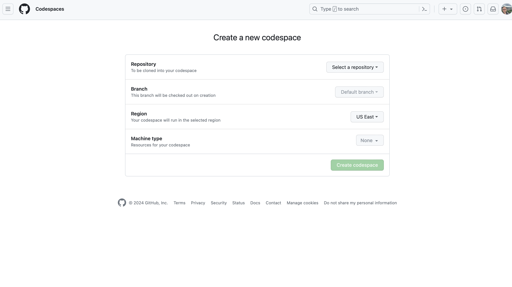
Fig. 20 Every codespace needs to live in a repository.#
But, what if you just want to code? Maybe we’re just coding together in class. When you try to create a new Codespace that is not related to one of our Github Classroom assignments, you’re asked to create the Codespace within a repository. Which repository?
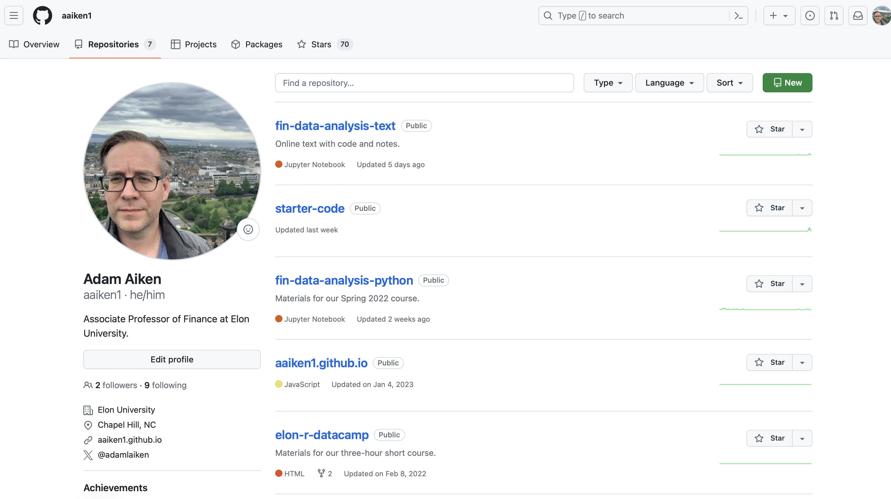
Fig. 21 Click the green, New button in the upper-right to create a new repository.#
Let’s create a general repository (i.e. directory to store files), just for this class. You can name this repository something general and make it private so that others don’t see it on your Github page. Then, this can be your home repository for general coding. Later on, you can even more files into this repository, if you want to save them.
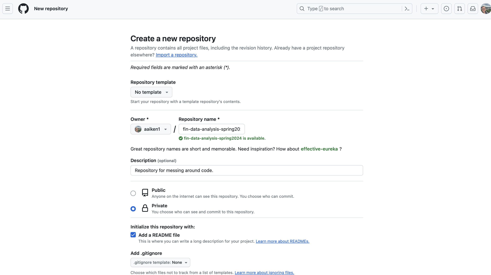
Fig. 22 Repositories are essentially directories where you can store files. In this case, you’ll be storing Jupyter notebooks, Python scripts, and data on Github’s servers. You can make local copies of repositories as well.#
Once you’ve created the new repository, it will appear on your Github page. If it is public, everyone can see your files. If it’s private, just you can.
Once you’re done with our course, I recommend creating a public repository to demonstrate some of your work. You can add the link to your LinkedIn profile.
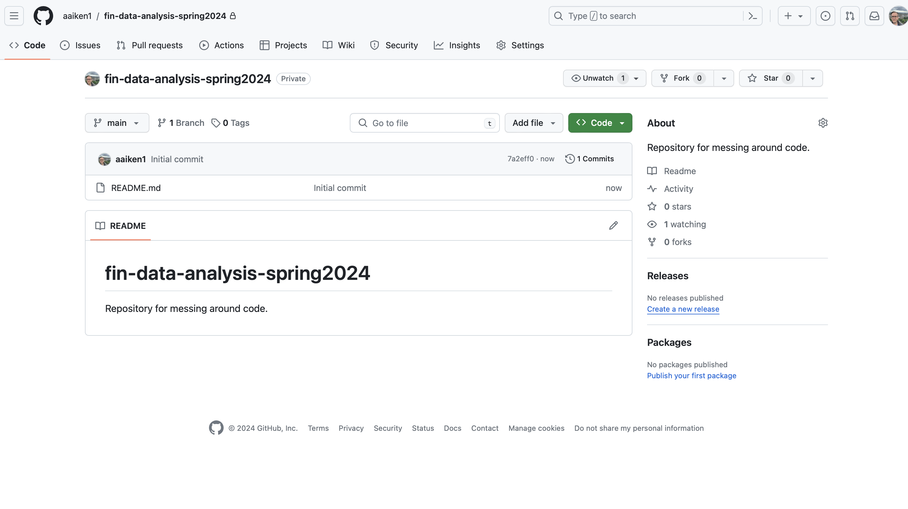
Fig. 23 When you create a new Codespace, you’ll get your new repository as an option.#